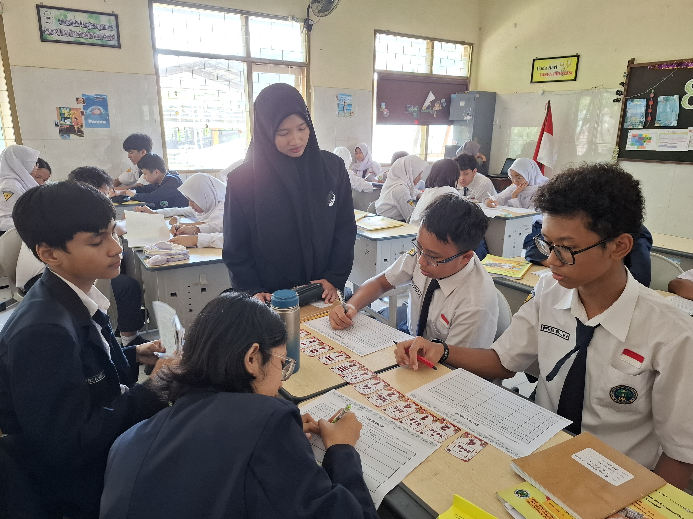
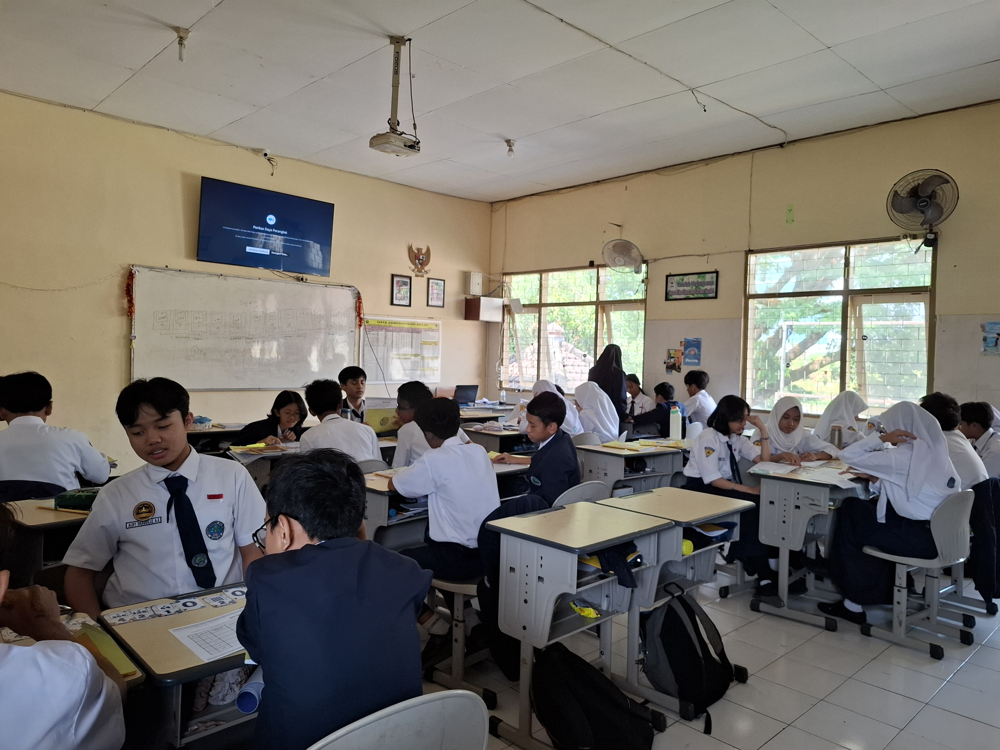

DigiMath Card
Kartu Konversi Sistem Bilangan
Media pembelajaran interaktif berbasis kartu untuk membantu murid memahami konversi sistem bilangan desimal, biner, dan oktal melalui aktivitas visual dan unplugged.
Latar Belakang & Permasalahan
Materi konversi sistem bilangan, khususnya desimal, biner, dan oktal, memerlukan pemahaman terhadap nilai tempat, aturan konversi, serta ketelitian dalam melakukan perhitungan. Oleh karena itu, dalam proses pembelajaran perlu memberikan kesempatan kepada murid untuk mempraktikkan langkah-langkah konversi secara langsung, memahami konsep yang dipelajari, dan menerapkannya dalam menyelesaikan soal latihan.
DigiMath Card digunakan sebagai media pembelajaran berbasis kartu yang memfasilitasi praktik konversi sistem bilangan secara lebih interaktif. Penerapan media ini bertujuan untuk meningkatkan keterlibatan murid dalam kegiatan latihan, membantu pemahaman konsep konversi pada tahap awal pembelajaran, serta mendukung pengerjaan Lembar Kerja Peserta Didik (LKPD).
Ide Inovasi: "DigiMath Card"
DigiMath Card dikembangkan sebagai media pembelajaran unplugged berbentuk permainan kartu untuk membantu murid memvisualisasikan, menyusun, membalik, dan mengelompokkan kartu proses konversi bilangan secara langsung.
- 12 Kartu: Set kartu memiliki nilai berbasis pangkat dua, mulai dari 1 hingga 2048.
- Representasi Biner: Sisi depan kartu merepresentasikan angka 1, sedangkan sisi belakang merepresentasikan angka 0.
- Representasi Oktal: Setiap digit oktal direpresentasikan melalui kelompok tiga kartu bernilai 4, 2, dan 1.
- Mencoba Langsung: Murid dapat menyusun, membalik, mengelompokkan, dan menghitung kartu untuk membangun representasi bilangan.
Cara Kerja DigiMath
- Desimal → Biner: Murid mencari dan menjumlahkan nilai kartu hingga mencapai bilangan target, kemudian menentukan kartu depan sebagai 1 dan kartu belakang sebagai 0.
- Desimal → Oktal: Nilai yang terbentuk dikelompokkan menjadi kombinasi tiga kartu dengan nilai 4, 2, dan 1.
- Biner → Desimal: Posisi kartu dan keadaan depan/belakang digunakan untuk menjumlahkan nilai tempat yang sesuai.
- Oktal → Desimal: Setiap digit oktal diuraikan menjadi kelompok kartu 4, 2, dan 1, kemudian seluruh nilai dijumlahkan.
Hasil Penerapan
- Murid menunjukkan ketertarikan dalam menggunakan DigiMath Card untuk melakukan perhitungan konversi sistem bilangan secara langsung.
- DigiMath Card membantu beberapa murid memahami langkah-langkah konversi sistem bilangan dengan lebih mudah pada tahap awal pembelajaran.
- Rata-rata nilai LKPD murid kelas 8A mencapai 95,22, yang menunjukkan capaian pengerjaan LKPD yang tinggi pada penerapan pembelajaran ini.
Pengalaman Berharga
-
Inovasi berawal dari kepekaan. Memahami bahwa inovasi pembelajaran bermula dari kepekaan terhadap kesulitan dan kebutuhan nyata murid.
-
Konkretisasi konsep abstrak. Belajar mengubah konsep konversi sistem bilangan yang abstrak menjadi lebih konkret melalui media kartu yang visual dan manipulatif.
-
Menghargai keberagaman gaya belajar. Respons murid selama penerapan menyadarkan bahwa setiap murid memiliki preferensi belajar yang berbeda, sehingga guru perlu menyediakan alternatif pendekatan pembelajaran.
-
Komitmen menjadi pendidik reflektif. Pengalaman ini mendorong untuk menjadi pendidik yang lebih kreatif, reflektif, dan terbuka terhadap evaluasi serta pengembangan media pembelajaran secara berkelanjutan.
Perbandingan Hasil LKPD
Perbandingan rata-rata nilai LKPD antara kelas VIII A yang menggunakan DigiMath Card dan kelas VIII E yang tidak menggunakan DigiMath Card.
Kelas 8A
DigiMath Card
Kelas 8E
Tanpa DigiMath Card
Rata-rata 8A
Menggunakan DigiMath Card
Rata-rata 8E
Tanpa DigiMath Card
Selisih
Perbedaan rata-rata nilai
Penerapan DigiMath Card
Dokumentasi aktivitas murid saat menggunakan DigiMath Card dalam pembelajaran konversi sistem bilangan.

Aktivitas menggunakan DigiMath Card
Murid menggunakan kartu untuk membantu proses konversi sistem bilangan.
Proses konversi
Murid menyusun dan membalik kartu sesuai nilai bilangan yang dikonversi.

Aktivitas pembelajaran
Aktivitas murid saat menggunakan DigiMath Card dalam pembelajaran.
“DigiMath menjadikan proses konversi bilangan lebih konkret melalui aktivitas menyusun, membalik, dan mengelompokkan kartu.”